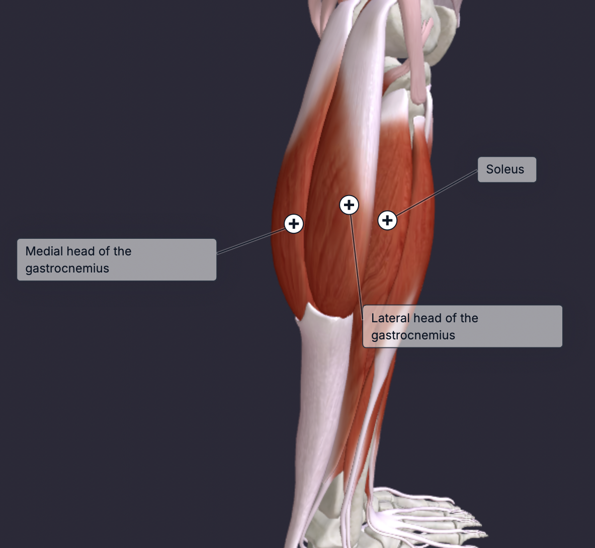

The calf consists of the gastrocnemius, soleus and the plantaris muscles in the posterior lower leg. These muscles work together for plantarflexion (pushing toes down) and, along with the achilles tendon are essential for propelling the body. The gastrocnemius is the large, superficial muscle of the calf, which is often what people think when they refer to the calf. The soleus is a deep muscle located under the gastrocnemius that is primary for plantarflexion and postural stability.
The gastrocnemius is best targeted with exercises that involve plantarflexion with the knee extended. The soleus is best targeted with exercises that involve plantarflexion with the knee flexed. The gastrocnemius is in a state of inefficiency when your knees are bent; thus, it is in your best interest to do calf raises with a straight leg rather than seated.
Pick a exercise and perform 2-3 sets based on your preference.
